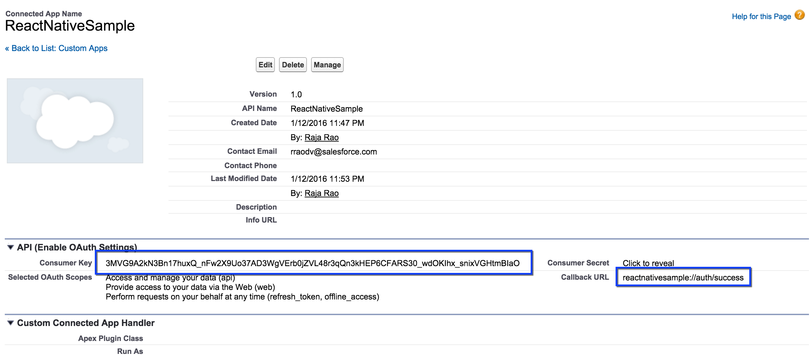
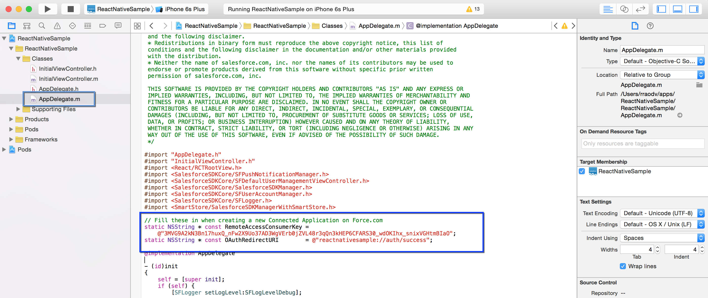

4. Adding Connected App
You may remember that when we generated the app using forceios we used the Connected App that came with sample template. In this unit, you'll create a new Salesforce Connected App in Salesforce, grab "App ID"(aka Consumer key) and Callback URL from there and update them in our sample app.
Step 1: Create A New Connected App
- In your Developer Edition organization, from Setup, type apps in the Quick Find box.
- Under Create, Click on Apps and scroll down to Connected Apps section, then click New to bring up the New Connected App page.
- Under Basic Information, complete the form as follows.
- Connected App Name: ReactNativeSample
- API Name: accept the suggested value
- Contact Email: enter your email address
- Under OAuth Settings, check Enable OAuth Settings.
- Set Callback URL to reactnativesample://auth/success.
- Under Available OAuth Scopes, select Access and manage your data (api), Provide access to your data via the Web (web), and Perform requests on your behalf at any time (refreshtoken, offlineaccess), then click Add.
- Click Save.

Click Continue and wait for 5-10 minutes.

Allow from 2-10 minutes for your changes to take effect on the server before using the connected app.
Step 2: Add App ID and Callback URL
App ID (Connected App's "Consumer Key") and the Callback URL is stored in the native app's AppDelegate.m file. We just need to change those values and restart everything.
- Switch to Xcode
- Stop the Xcode app if it's running (top-left corner).
- Open
AppDelegate.m
- Change
RemoteAccessConsumerKey's value to match the Consumer Key copied from the connected app we created earlier.
- Change
OAuthRedirectURI's value to match the Callback URL from the connected app we created earlier.
- Save.

- Switch to the iOS Simulator.
Step 3: Restart Everything
- From the Simulator's menu, click on ** Simulator** then click on Reset Content and Settings.
- Switch to the terminal where we have "React Native CLI" and stop it by pressing Control + C, then restart it by running npm start
- Switch to Xcode and run the app by pressing the Arrow button
- You should now see Simulator opening up the app and show the Salesforce login screen.
- Login with your developer org credentials.
- Notice that next OAuth screen shows ReactNativeSample. This means our app now uses the new Connected App configuration.

- Press "Approve" in the next OAuth screen.
Note that you need to reset the simulator because Sample app caches old Connected App's information.